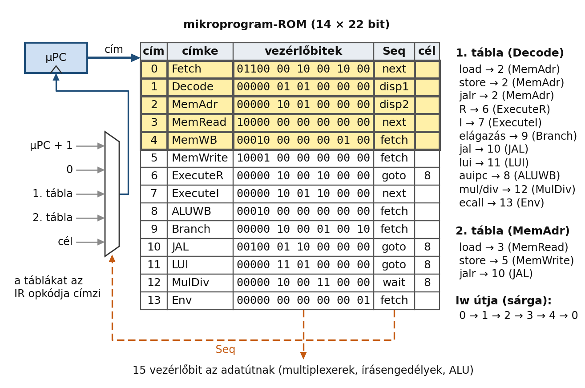
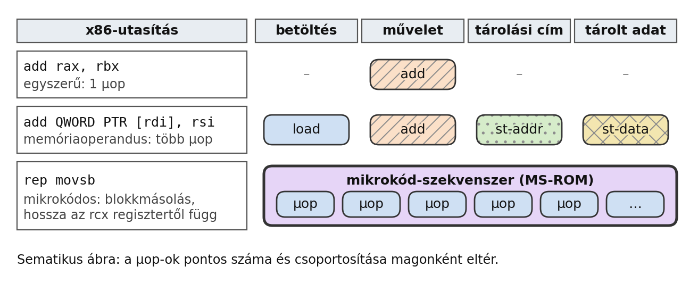

Tegyük fel, hogy egy processzor vezérlésében a gyártás után derül ki hiba: egy ritka utasítássorozat rossz eredményt ad. Ha a vezérlő kapukból van huzalozva, a javításhoz új lapka kell. A mai x86-processzorok viszont letölthető mikrokód-frissítéssel módosíthatók. A könyv mérőgépén (i5-13400F, 2026. november) a Linux ki is írja a betöltött változatot:
grep -m1 microcode /proc/cpuinfomicrocode : 0x3eVan egy másik jelenség is. A C *counter += v; sorból a
fordító x86-on egyetlen utasítást készít:
add QWORD PTR [rdi], rsi. Ez az egy utasítás olvas a
memóriából, összead és visszaír; a többciklusú gépünk fogalmaival ez
legalább hat ciklus munkája volna. Hogyan futtat ilyet egy gyors,
futószalagos mag? Mindkét kérdés ugyanahhoz a gondolathoz vezet: a
vezérlés maga is lehet program.
Nézd meg újra az előző alfejezet állapottábláját: minden sora egy ciklus vezérlőjeleit adja meg, és megmondja, mi a következő állapot. Ez a tábla gyakorlatilag egy program, amelynek az „utasításai” a vezérlőjel-kombinációk. Tegyük egy kis csak olvasható memóriába (ROM), és vezessünk be hozzá egy külön programszámlálót. Minden ciklusban kiolvassuk a ROM egy szavát: a szó bitjei közvetlenül a váltókra mennek, egy kis rész pedig kijelöli a következő szó címét.
Az utasításkészlet bővítése ekkor nem új kapuhálózat, hanem néhány új
sor a ROM-ban. Az ábra a teljes vezérlőt mutatja; a sárga sorok a
lw végrehajtása.

Definíció. A mikroutasítás a vezérlő egy ciklusát leíró ROM-szó: vezérlőjelek és a következő cím kiválasztásának módja. A mikroprogram a mikroutasítások sorozata a ROM-ban, a µPC (mikroprogram-számláló) az aktuális szó címe, a szekvenszer pedig az a logika, amely a következő µPC-t kiválasztja.
A mi 22 bites szavunk mezői:
| Mező | Bit | Tartalom |
|---|---|---|
| AdrSrc, IRWrite, PCWrite, RegWrite, MemWrite | 5 × 1 | egyszerű kapcsolók |
| ALUSrcA, ALUSrcB, ALUOp, ResultSrc | 4 × 2 | multiplexerválasztók és ALU-kérés |
| Branch, Env | 2 × 1 | elágazási írás, rendszerhívás |
| Seq | 3 | következő cím módja |
| Target | 4 | célcím a goto és wait módhoz |
A Seq mező hat értéke: next (µPC + 1),
fetch (vissza a 0 címre), disp1 és
disp2 (elosztás az opkód szerint), goto (ugrás
a Target címre), wait (maradj, amíg a szorzó
nem végez, utána ugorj). Az elosztótábla (dispatch
table) az utasításosztályból ad ROM-címet: az első a Decode
után, a második a MemAdr után, ahol a lw, a
sw és a jalr útja elválik. A mikroprogram
tehát maga is tartalmaz elágazást és ciklust, mint egy gépi program.
A ROM sorrendje úgy van megválasztva, hogy a leggyakoribb folytatás
legyen a következő cím (MemRead után MemWB,
ExecuteI után ALUWB). A ROM mérete
bit, a 4 bites cím 16 szót enged meg, tehát két hely szabad.
| Szempont | Huzalozott (kapukból) | Mikroprogramozott (ROM) |
|---|---|---|
| sebesség | gyors, kevés kapuszint | lassabb: a ROM olvasása is idő |
| bővítés, javítás | új áramkör | a ROM tartalma |
| bonyolult, hosszú utasítás | sok logika | csak több szó |
| tipikus mai szerep | a gyakori utasítások | a ritka, összetett utasítások |
A táblázat lényege: a mikrokód a rugalmasságért sebességgel fizet. A mi példánkban a mezők közvetlenül vezérelnek (vízszintes mikrokód); a függőleges változat tömörebben kódolja a jeleket, és egy második dekódolási lépéssel fejti ki őket, tehát kisebb a ROM, de hosszabb az út a jelekig.
A mikroprogramozás gondolata M. V. Wilkes 1951-es javaslatáig nyúlik vissza: a bonyolult vezérlést szabályos, tesztelhető tárolóba szervezi. A mai processzorokban a mikrokód-frissítés a lapkán lévő, átmenetileg felülírható tárba tölt javítást; mivel ez kikapcsoláskor elvész, a firmware vagy az operációs rendszer minden induláskor újra betölti (a mechanizmus részletei gyártófüggők, ellenőrizendő: [S-INTEL-SDM]). A javítás ára gyakran teljesítmény, mert a kerülőút több lépés.
A sorrendi, többciklusú gép egy utasítást egymás utáni ciklusokra bont. A mai x86-magok hasonlót tesznek, de más céllal: az utasítást a dekóder egyszerű, belső mikroműveletekre (µop) fordítja, és ezeket hajtja végre futószalagon, akár párhuzamosan (RISC-V, AArch64 és x86-64 összevetése).
Fordítsunk le három C-függvényt g++ -O1 -S -masm=intel
kapcsolókkal (g++ 15.2): egy tömbösszegzést (long), egy
számlálónövelést és egy osztást. A lényeges sorok:
; sum ciklusmagja
.L3:
add rdx, QWORD PTR [rax]
add rax, 8
cmp rax, rcx
jne .L3
; void bump(long* counter, long v)
add QWORD PTR [rdi], rsi
ret
; long divide(long a, long b)
mov rax, rdi
cqo
idiv rsi
retA sum ciklusában a memóriából olvasó add
egyszerre két dolgot tesz: betölt és összead. A dekóder ezt egy load- és
egy ALU-µopra bontja. A bump utasítása már négy lépés:
betöltés, összeadás, tárolási cím, tárolt adat. A nagyon összetett vagy
változó hosszú utasítások, például a blokkmásoló rep movsb,
sok µopot igényelnek: ezeket a mikrokód-szekvenszer
adja ki egy ROM-ból, a fenti mikroprogramozás közvetlen
leszármazottjaként.

Az x86-mag dekóderei jellemzően aszimmetrikusak: több egyszerű dekóder csak egy µopra fordítható utasításokat kezel, egy összetett dekóder a néhány µopos eseteket, a hosszabbakat pedig a mikrokód-ROM adja [S-AGNER]. Két ötlet csökkenti a µopok számát:
cmp + jne, egyetlen µoppá
olvad.(ellenőrizendő: a fúzióképes utasításpárok, a dekóderek száma és a µop-számok magonként eltérnek; mért adatok: [S-UOPS], [S-AGNER])
Miért fontos ez a programozónak? A mag elülső része ciklusonként
korlátozott számú µopot tud továbbadni. A sum ciklusa négy
utasítás, de makrofúzióval jellemzően csak három egység; ha ugyanezt a
ciklust úgy írnánk, hogy a fúzió ne jöhessen létre (például a
cmp és a jne közé egy másik utasítás kerül),
több egység foglalná a szűk keresztmetszetet. Az utasítások száma tehát
csak durva becslés; a pontosabb mérőszám a µopoké, és végső soron a mért
idő.
A magok a lefordított µopokat egy µop-cache-ben is eltárolják, hogy a forró ciklusokat ne kelljen újra dekódolni (Egy modern mag anatómiája).
Továbbvitt eredmény. A µop-szemlélet: a mag végrehajtó része nem az ISA utasításait, hanem belőlük fordított mikroműveleteket kezel; a teljesítményt a µopok száma, a fúziók és a dekóder korlátai befolyásolják. Erre épít Egy modern mag anatómiája és A top-down elemzési módszer.
A MemRead mikroutasítás kódolása.
AdrSrc = 1, a másik négy kapcsoló 0; a nem használt választók alapértéke
00; Branch = Env = 0; a folytatás next (000), a cél
0000:
AdrSrc IRW PCW RegW MemW | SrcA SrcB ALUOp Res | Br Env | Seq | Target
1 0 0 0 0 | 00 00 00 00 | 0 0 | 000 | 0000A lw útja. µPC = 0 (Fetch,
next) → 1 (Decode, disp1: load →
2) → 2 (MemAdr, disp2: load → 3) → 3
(MemRead, next) → 4 (MemWB,
fetch) → 0. Öt ciklus, mint az állapotgépben.
Egy új utasítás mikrokódból. Legyen
jm imm(rs1): memórián keresztüli ugrás, PC ← M[rs1 + imm]
(például ugrótáblához). Az adatút már tud címet számolni, memóriát
olvasni, és a Data regiszter tartalmát a PC-be írni, csak a
sorrend új:
JmRead: AdrSrc = 1, next;JmPC: ResultSrc = Data,
PCWrite = 1, fetch;jm → 2 (MemAdr), a 2.
táblában jm → 14.Négy változás, egyetlen kapu sem. Az utasítás kódjához a RISC-V saját
bővítésekre fenntartott custom-0 opkódját (0001011)
használjuk, I formátumban.
Írassuk ki a ROM tartalmát:
import sys; sys.path.insert(0, "code")
from archkit import datapath as dp, riscv
rom, disp1, disp2 = dp.microprogram()
for addr, m in enumerate(rom):
target = f"-> {m.target}" if m.seq in ("goto", "wait") else ""
print(f"{addr:2} {m.label:9} {dp.encode_micro(m)} {m.seq} {target}")
print("1. tábla:", {k: v for k, v in disp1.items() if k in ("load", "store", "jalr", "branch")})
print("2. tábla:", disp2) 0 Fetch 0 1 1 0 0 00 10 00 10 0 0 000 0000 next
1 Decode 0 0 0 0 0 01 01 00 00 0 0 010 0000 disp1
2 MemAdr 0 0 0 0 0 10 01 00 00 0 0 011 0000 disp2
3 MemRead 1 0 0 0 0 00 00 00 00 0 0 000 0000 next
4 MemWB 0 0 0 1 0 00 00 00 01 0 0 001 0000 fetch
5 MemWrite 1 0 0 0 1 00 00 00 00 0 0 001 0000 fetch
6 ExecuteR 0 0 0 0 0 10 00 10 00 0 0 100 1000 goto -> 8
7 ExecuteI 0 0 0 0 0 10 01 10 00 0 0 000 0000 next
8 ALUWB 0 0 0 1 0 00 00 00 00 0 0 001 0000 fetch
9 Branch 0 0 0 0 0 10 00 01 00 1 0 001 0000 fetch
10 JAL 0 0 1 0 0 01 10 00 00 0 0 100 1000 goto -> 8
11 LUI 0 0 0 0 0 11 01 00 00 0 0 100 1000 goto -> 8
12 MulDiv 0 0 0 0 0 10 00 11 00 0 0 101 1000 wait -> 8
13 Env 0 0 0 0 0 00 00 00 00 0 1 001 0000 fetch
1. tábla: {'load': 2, 'store': 2, 'branch': 9, 'jalr': 2}
2. tábla: {'load': 3, 'store': 5, 'jalr': 10}A mikroprogramozott vezérlő (MicroController) a
többciklusú gépben a huzalozott állapotgép helyére tehető. Egy helyes
mikroprogramnak ciklusról ciklusra ugyanazt kell adnia:
x = list(range(64))
src = riscv.saxpy_src(3, x, x)
a = dp.MultiCycle(src)
b = dp.MultiCycle(src, controller=dp.MicroController())
a.run()
b.run()
same = [(c.state, c.signals) for c in a.cycles] == [(c.state, c.signals) for c in b.cycles]
print("ciklus:", len(a.cycles), len(b.cycles), " ciklusonként azonos:", same)ciklus: 2538 2538 ciklusonként azonos: TrueVégül a jm utasítás. Az assembler nem ismeri, ezért a
program egy nop helyére írjuk be a kódszót:
program = riscv.assemble("""
.data
table: .word 0
.text
main:
la t0, table
la t1, target
sw t1, 0(t0) # table[0] = target címe
slot:
nop # ide kerül: jm 0(t0)
li a0, 1 # átugorjuk
target:
li a1, 2
""")
slot = program.symbols["slot"]
program.words[slot // 4] = dp.encode_jm(riscv.reg_number("t0"), 0)
program.source[slot] = "jm 0(t0)"
cpu = dp.MultiCycle(program, controller=dp.with_memory_jump())
cpu.run()
jm = next(i for i, ins in enumerate(cpu.trace) if ins.op == "jm")
print(" ".join(c.state for c in cpu.cycles if c.index == jm))
print("a0 =", cpu.reg("a0"), " a1 =", cpu.reg("a1"))Fetch Decode MemAdr JmRead JmPC
a0 = 0 a1 = 2Az új utasítás öt ciklus, a li a0, 1 kimaradt
(a0 = 0): az ugrás működik, pedig az adatút egyetlen
vezetéke sem változott.
jm programban írd át a
with_memory_jump() hívást
MicroController()-re: a Decode utáni elosztás
nem talál bejegyzést, a modell KeyError: 'jm' hibával áll
le. Az elosztótábla tehát a dekóder része.JmPC sort:
ctl.rom[15] = dp.MicroInstr("JmPC", ctl.rom[15].signals, "next"),
majd add át ctl-t a gépnek. A µPC a 15. cím után 16-ra lép,
ahol nincs szó (IndexError); a hardverben értelmetlen
mikroutasítás következne.long f(long* p) { return ++*p; }
függvényt -O2 -S -masm=intel kapcsolókkal. A könyv gépén a
g++ 15.2 külön betöltést, add rax, 1-et és tárolást ad,
mert az új érték a visszatéréshez regiszterben is kell. Alakítsd
void függvénnyé: mi változik?add QWORD PTR [rdi], rsi?ALUWB
mikroutasítást.add és a sw
útját µPC-sorozatként, és add meg a ciklusszámukat.sum
fenti ciklusmagja a mikro- és makrofúzió figyelembevételével?
Indokold.jalm utasítással: ugorj M[rs1 + imm] címre, és tedd a
visszatérési címet az rd regiszterbe. Csak a ROM és a
táblák változhatnak; ellenőrizd futtatással.A mikroprogramozott vezérlés a vezérlő állapotgépet ROM-ban tárolja:
minden mikroutasítás egy ciklus vezérlőjeleit és a következő cím módját
(next, fetch, elosztás, ugrás, várakozás) adja
meg, a µPC-t a szekvenszer lépteti. A mi vezérlőnk 14 darab 22 bites
szó, és ciklusról ciklusra azonos a huzalozott állapotgéppel; új
utasítás néhány új sor lehet. A huzalozás gyorsabb, a mikrokód
rugalmasabb és javítható. A mai x86-magok az utasításokat µopokra
bontják: az egyszerűeket egyszerű dekóderek, a ritka, hosszú eseteket a
mikrokód-szekvenszer; a mikro- és makrofúzió csökkenti a µopok számát. A
végrehajtó rész µopokkal dolgozik, ez a µop-szemlélet alapja a modern
magok elemzésének.
cmp és jne,
egyetlen µoppá egyesítése a dekóderben.RegWrite = 1, minden más kapcsoló 0, választók 00, Branch = Env = 0,
Seq = fetch (001):
0 0 0 1 0 00 00 00 00 0 0 001 0000.
add: 0 → 1 → 6 (ExecuteR, goto
8) → 8 (ALUWB) → 0, 4 ciklus. sw: 0 → 1 → 2 →
5 (MemWrite) → 0, 4 ciklus.
Jellemzően három fúzionált µop: az
add rdx, QWORD PTR [rax] egy (mikrofúzióval; a végrehajtó
egységek felé load + ALU), az add rax, 8 egy, a
cmp + jne pár egy (makrofúzió). Mivel a fúziós
szabályok magonként eltérnek, ezt méréssel kell ellenőrizni
(ellenőrizendő: [S-UOPS]).
32 szóhoz 5 bites cím kell, ezért a Target mező 5 bit, a
szó 23 bit, a ROM
bit.
A JmPC mikroutasításban az ALU szabad: számolja ki
OldPC + 4-et, és a folytatás legyen az ALUWB
(8. cím), amely az ALUOut értékét írja az
rd-be.
ctl = dp.with_memory_jump()
link = dict(ctl.rom[15].signals, ALUSrcA="OldPC", ALUSrcB="4")
ctl.rom[15] = dp.MicroInstr("JmPC", link, "goto", 8)
rd, rs1 = riscv.reg_number("ra"), riscv.reg_number("t0")
program.words[slot // 4] = dp.encode_jm(rs1, 0) | (rd << 7)
program.source[slot] = "jalm ra, 0(t0)"
cpu = dp.MultiCycle(program, controller=ctl)
cpu.run()
jm = next(i for i, ins in enumerate(cpu.trace) if ins.op == "jm")
print(" ".join(c.state for c in cpu.cycles if c.index == jm))
print(f"ra = {cpu.reg('ra'):#x}, slot + 4 = {slot + 4:#x}, a1 = {cpu.reg('a1')}")Fetch Decode MemAdr JmRead JmPC ALUWB
ra = 0x18, slot + 4 = 0x18, a1 = 2A jalm hat ciklus. A jm (ahol
rd = x0) továbbra is helyes, de egy ciklussal
lassabb lett; ha ez nem elfogadható, külön mikroutasítást kell neki
adni.